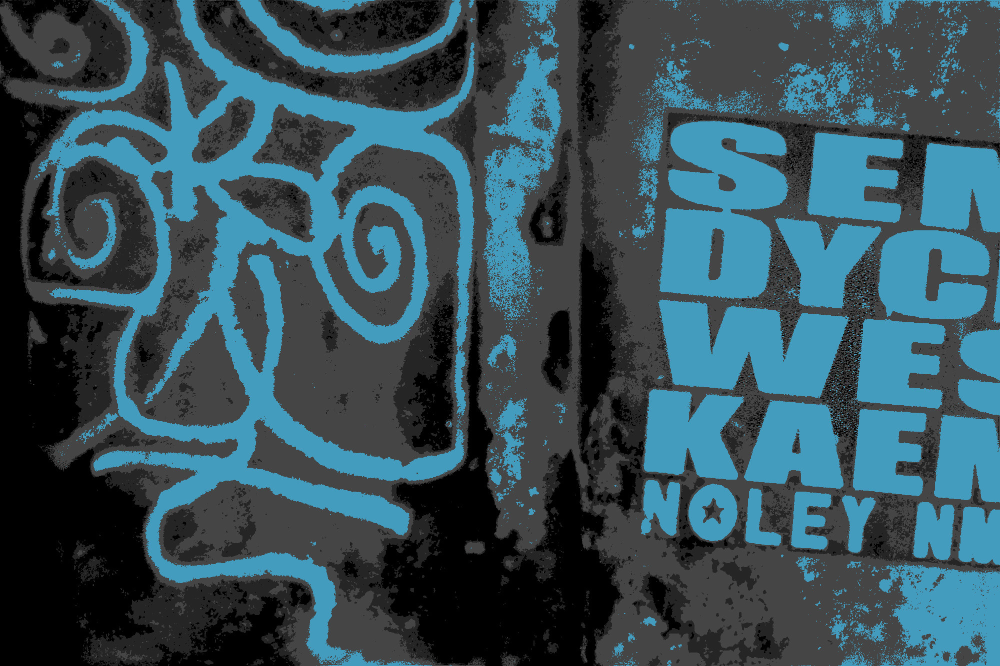
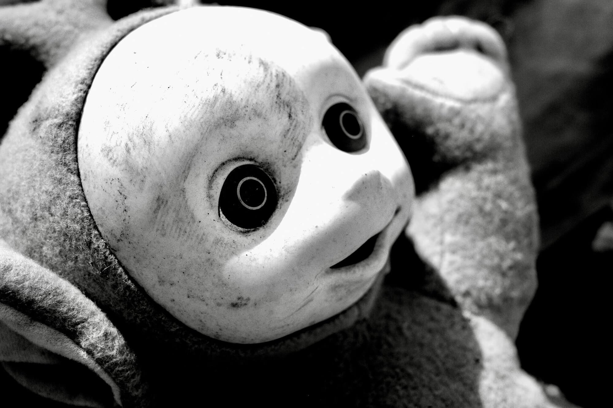
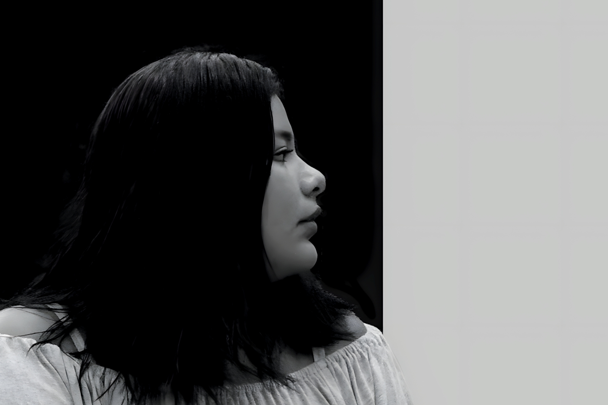
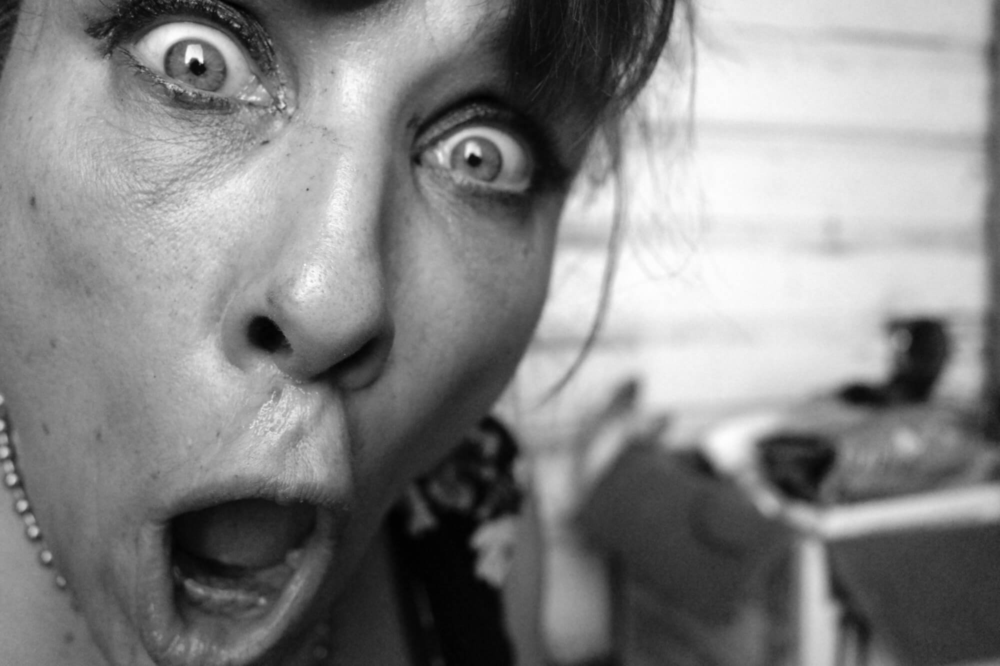
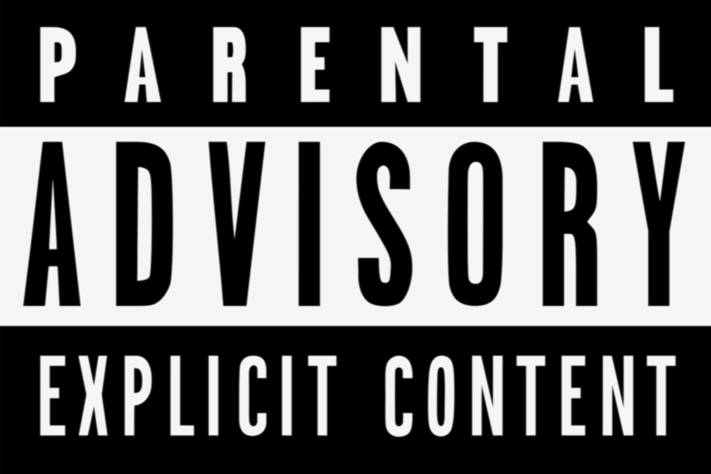
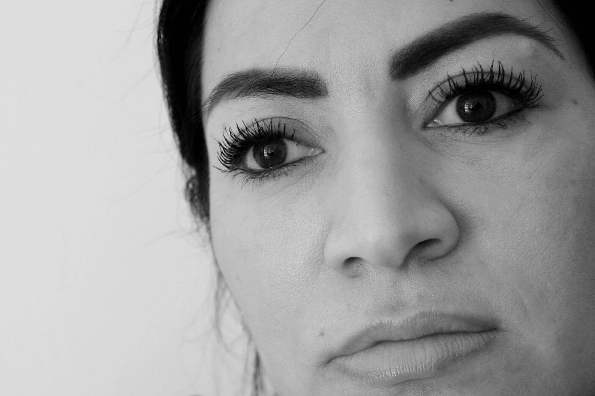

There's a brass ring in everybody's life. (Photo by author.)
(There's only one thing left to do before I go.)
Before the fall—before the flood—there was a moment of serenity.
The sun shone. The breeze blew. The birds chirped. And the sky reveled in an iridescent blue that had no end.
A gaping wound called humanity entered the picture, some say by magic. Other say there is no magician.
Serenity convulsed then vomited up culture, the arts, and every way to record for posterity our pain—that best friend forever we love and loathe from the first bloody moment to the last.
The rationale behind this endeavor is simple.
The carousel at Neptune Park has a brass ring on a pole that wobbles just out of reach of the riders. A few give it a shot. Most simply never bother.
There's a brass ring in everybody's life.
Here's the one that catches my eye.
If we gotta leave, let's leave them laughing. Let's leave them crying. But let's leave them with something that matters.
I can do that. But first—
Gain exposure, on which to—
Build relationships, with which to—
Open doors.
To that end, I will—
Erect a digital platform to showcase talent.
Market it sufficiently to garner attention and elicit opportunities.
Worst case scenario—I'll take a Sharpie and draw a door on the wall next to the fridge.
Hold the railing. Watch your step.
See you on the other side.
Wallace.
Brands happen by design. (Photo by author.)
What is a brand?
You know one when you see one, but putting your finger on exactly what it takes to build one from scratch turns out to be more challenging than it first sounds.
Here's a start.
Brands are conspicuous and credible. They radiate style. They deliver substance. They impart value. When you consume a brand, you get what you came for. And you always come back for more.
It's a Commodified Life™. Brands give it meaning, don't leave you empty-handed, and won't let you go it alone. Think intimate partner. Huh? Yeah, it's that intense—in the shadows, of course. Sure, you've got boundaries, but even they are branded.
That which makes someone or something unique and desirable in the eyes of the beholder forms the basis of a brand. The smart kids with their marketing acumen and freelance design gigs take over from there. A pinnacle is reached when exclusive intersects with essential. “You can't live without this, and you can only get it here.”
A brand speaks to you, relates to you, understands you, is there for you, and above all loves you back.
Brands happen by design.
Let's build a brand.
You signed up for all this, remember? (Photo by author.)
There won't be an intermission.
But you're free to get up and roam around.
Here's the thing with the internet.
Everybody is trying to sell you something.
Why?
Because you're buying. That's why.
It's not always about credit cards and shipping preferences. You're looking for answers. Solutions to a problem.
Even if it's just how to kill the next ten minutes.
Never before in the history of mankind has the distance been shorter between you and those who want your attention (to get you to do things that benefit them.) Forty-two years ago somebody sang, “I've got thirteen channels of s*** on the TV to choose from.” You can no longer count the distractions available—many even appear free at first glance—if you don't count the time wasted, the opportunity thrown away. (But then sometimes that's what you're after—isn't it?)
The cynical tell us we're being played, but by whom? Retailers? Manufacturers? The mass media that serves them? Nobody put a gun to your head. You signed up for all this, for free—remember?
Here's a thought. What if the players and the playees are one and the same? What if it really is All About You™, like they've been telling you all along? I know, I know. You didn't invent Google. Your needs did.
Look at it this way. The whole thing is theater, and we are both the actors and the audience. We're being played. but we wanted it this way—we wrote the script. We bought the tickets. We'll stay for the encore.
Sure, there's a man behind the curtain" (a reference most kids today won't get), but he's only there to entertain us, and if we didn't respond to his pulling the levers and turning the dials , he'd be sitting at home collecting benefits and dreaming of opening a dispensary like everybody else.
At the end of the day, every day, we're being catered to, courted, cajoled, and conned because we've got something they want—discretionary income, votes, consent, acquiescence, a role to play—and they've got something we want—comfort and convenience, sure, but it's bigger than that. Answers. Solutions. Relief.
A way to kill the next ten minutes.
Or the next thirty years.
The grand prize is on the inside. (Photo by author.)
Why do brands matter?
We can talk about individual and social psychology, and we should, but the straightest path to answering this question is to ask another. “What's in it for me?”
Brands appeal to our desire to define ourselves in ways that make us feel better. Sure, they cost—but, boy, do they deliver!
Brands make us feel better about our lives by rewarding us with what we crave—the power to influence how others see us, but more than anything, the power to influence how we see ourselves.
There's a direct link between the brands we consume and the identity we project. That identity becomes our own personal brand of sorts, and we are first in line to consume it, to bask in it, revel in it, devour it. You might say that's really the whole point. We're our own biggest fans; the idolatry never ends.
Brands allow us to define ourselves, to invent not only what others see but what we live with from day to day. We dress the part, drive the car, listen to the music, follow the fads, and hold the opinions of the folks we want to be, the group we want to belong to.
Brands externalize primitive desires giving us feedback in real time that we have managed to become the things to which we aspire—or at least seem to become them. They allow us to tell a story and to believe it's true, as true as anything can be when manufactured and simulated. Sure, brands elicit the approval of others (and stir up their envy), but the grand prize is on the inside—we get to approve of ourselves, at least for today.
Brands take us from wherever we are to somewhere we'd much rather be—at least for the moment. Nothing else does. Not as quickly or efficiently. Or convincingly.
Contemporary mainstream society has gone all in on this for as long as anyone alive can remember.
This isn't about mannequins in a store window. This is about how we understand reality. Measured. Monitored. Packaged. Purchased. An assembly line of experiences.
Want Real™? Here's your real.
…authenticity derived from appearances, found in identification with clever advertising campaigns designed to manipulate opinion and modify behavior.
THE NEW REAL
That's all there is. That's all there ever was. That's all that's left.
The stark truth is you're alone. (Photo by author.)
Maybe They'll Hear You
This isn't about labels on cans of peas.
Or Coke vs Pepsi vs RC.
Or Democrats vs Republicans.
Or Presbyterians vs the Methodist.
It's not about sexy underwear in suburban shopping malls or smart phones designed to do less, not more.
Or blogs just starting out.
This is about associations we make, assumptions we hold, and great leaps of faith that we can't live without.
There's a world of difference between who we are and who we want to be.
There's a world of difference between who we are and who we are willing to think we are, with a little bit of prompting and a whole lot of guile.
The mercantile world responds to this by offering products that promise lush experiences—liberating, transformative, salvation-like if taken at face value.
Brands allow us to leap rather effortlessly over these divides while convincing ourselves that they no longer exist.
Brands give us distinction, let us see ourselves as special, even unique, rather than one of many or—the more devastating option—no one at all.
Brands tell a story all their own while inviting us to make it our own. The price of admission pales in comparison to the value of what we get to take home. Brands enable us to tell OUR story. And tell it convincingly.
It never seems to occur to anyone to ask the obvious. Who do we think is listening? Who do we think is watching? The neighbors? Strangers? Folks just like us?
You're standing in the center of the stage. That didn't take much effort. You strode right out there. Maybe that's human nature, but contemporary culture fans it to the hilt. The stark truth is you're alone. No audience in sight. The house is empty. Blink. Now it's full, but every ticket holder looks just like you—the star in the spotlight. The show ends. Walking across the parking lot elicits a passing glance from a stranger, but the truth is that he, like you, is too self absorbed to notice anything outside the bubble—the bought and paid for bubble that each inhabits as his own.
No one else is paying attention as we proclaim our significance, parade our uniqueness. Not really—why should they? But WE are.
Brands are identities that commodities are given by those who market them. They serve to distinguish otherwise similar products, to make them distinct in their appeal to the buying public, and to maximize that appeal by conveying an aura of value that far exceeds a mere product. Consumers bring something to the table as well—call it gullibility or wishful thinking, but there's a willingness, readiness, eagerness to believe the hype, to idolize, to embrace and enshrine the conspicuous consumption of commodities as a path to describing self, defining place, and finding purpose.
At the end of the day and well into the night, brands give us the opportunity to be somebody—somebody good—to feel like individuals who matter and are in control and have lives worth living. To call authentic the thing derived from everything that isn't. To convince ourselves that we are everything we're not.
And where can you find a better deal than that?
Parental Advisory Label AKA "Tipper Sticker". (Public domain.)
Just Say It™
No vamos muy lejos, mi amor. Todavía no.
Something comes first.
Half the time, maybe most of the time, those parental advisory stickers are more a marketing ploy that zeros in on a target demographic than any kind of disincentive. They're not a warning; they're an invitation. Look Here—This Speaks to You™.
Just being honest.
So how do we approach vulgarity and profanity, responsibly?
Look at it this way.
Given half a chance folks will tell you what they want and show you how they get it.
You've just got to sit still and listen, stand back and watch.
Dialogue tells you not just what characters want or think but how they feel about life and their place in it. Dialogue gives you a feel for what they're capable of. Dialogue lets you get to know them intimately.
It boils down to this.
The right word at the right time in the right place for the right reason can move a freaking mountain.
These pages feature honest and frank portrayals of Americans in turmoil. Not celebrities. Not superheroes. Real people whose dreams get derailed before they go down the drain or up in smoke.
Look around. Everything's an up sell. Everyone is reading off a script. Checking boxes on a list. Managing your perception.
What does it take to tell the truth, to stop using each other, to value things that last, to learn to let go?
What does it take to change the channel when all the programs are the same?
What does it take to reinvent real?
Sure, they stopped handing out opiates. But all they did was replace them with another drug.
He Wept is an intervention. No topic is off limits so long as it is approached with respect for the ultimate dignity of those involved.
We don't settle for pat answers or cliches. We Go Down Dark Alleys Alone™. This isn't Hallmark.
Oh yeah, there's something more.
NOT SEEN ON TV.
NOT SOLD IN STORES, EITHER.
You knew THAT was coming, right?
You can't live without it, and you can't get it anywhere else. (Photo by author.)
Un día de estos.
We'll be able to say the following.
He Wept™ is a brand of high concept entertainment (drama, even comedy) available online and beyond.
Speaking as if we were already there.
He Wept™ rises above the din. Easily found. Easily shared. On your mind. Everywhere you look. Conspicuous.
He Wept™ delivers fresh, original, riveting content that speaks the unspoken and reveals the unseen, that empowers by inviting new perspectives, that captivates the audience like nothing else out there. Credible.
He Wept™ is easy to use and fits like a glove. It looks just as good on you as it does on the shelf. Style.
He Wept™ showcases insight oriented, multimedia storytelling that explores the search for meaning, freedom, and love in contemporary society, that highlights the struggle of ordinary men and women to grow, change, and live life to the fullest. Substance.
He Wept™ creates exclusive content that is provocative, poignant, persuasive, profound, and memorable, that motivates, transforms, and inspires, that makes hope seem like less of a waste of time and dreams like less of a lost cause. Value.
He Wept™ gets under your skin and doesn't let go.
You can't live without it, and you can't get it anywhere else.
We're setting the bar very high here.
You might even say it's in the stratosphere.
How high do you want to fly?
What does it take to reinvent real? (Photo by author.)
Provocative.
Poignant.
Profane.
Real.
Original fiction that bleeds.
Stark and uncompromising stories of ordinary lives where hope is elusive and despair relentless.
Stories of everyday life written by and for those who live it.
Stories that propel the reader from spectator to participant, from witness to accomplice, that dissolve the boundary between observer and observed, between self and other, between imagination and real life.
Stories that roam the interior, speak the unspoken, expose the unseen, revealing the power of the past to define and determine the present, telling the truth from the inside out.
Stories that leverage the limits of the possible, engaging the problem of humanity at its core, exploring the oldest lament, tragically always new—"If only I had a second chance.“
Stories that invite reflection. And incite response.
Authentic.
Urgent.
Explicit.
This is not entertainment.
This is resurrection.
Original fiction that bleeds. (Photo by author.)